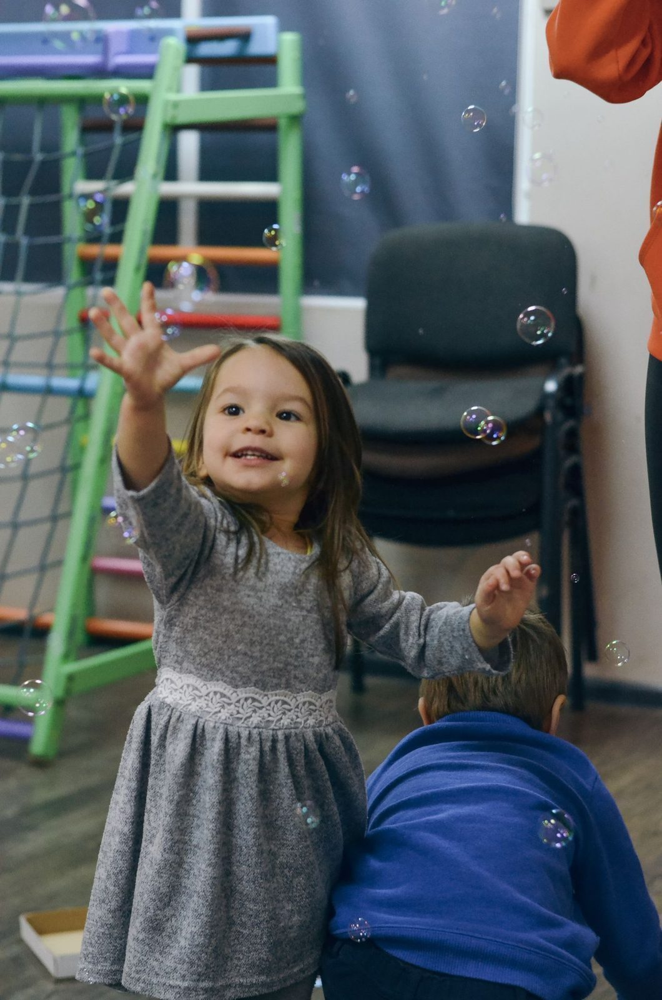
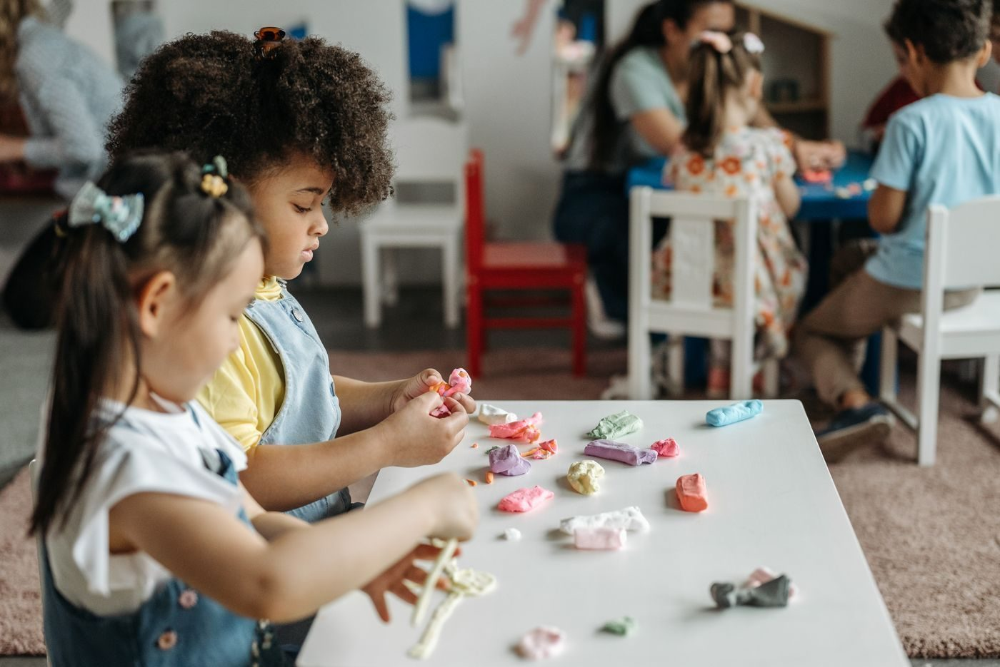

A full-time professional photographer in Wichita, described in research as award-winning. Work covers weddings, engagements, seniors, children, and families, plus Children's Highlights mini-sessions and real estate photography through Tobie Andrews Media.


142 N Mead St, Wichita, KS 67202
Open Wednesday, 3 PM to 7 PM; Thursday, 3 PM to 8 PM; and Saturday, 12 PM to 4 PM. Other days are not listed.